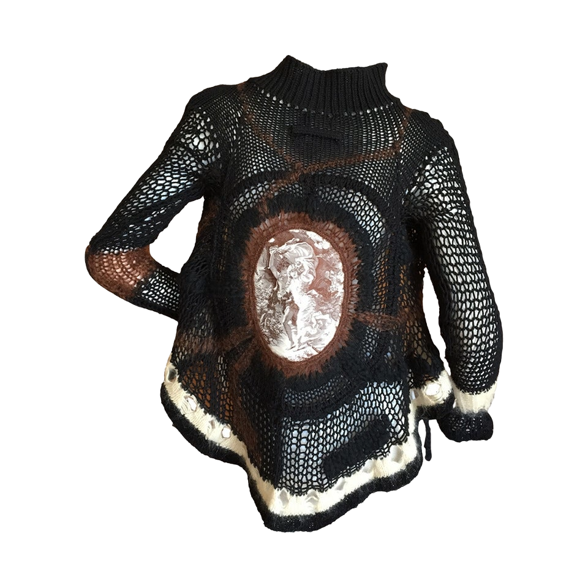
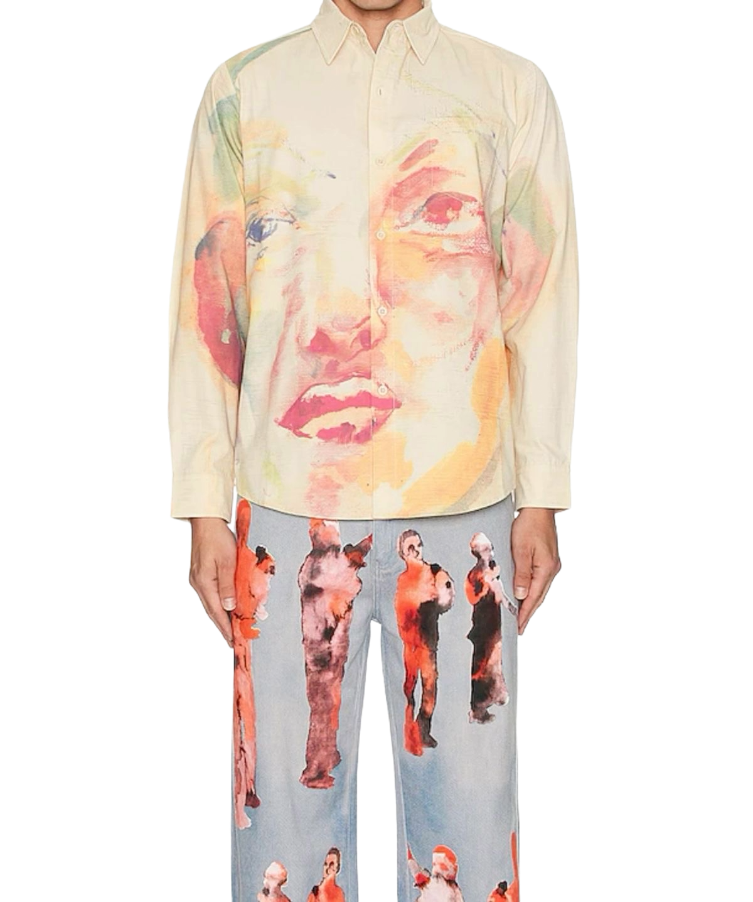
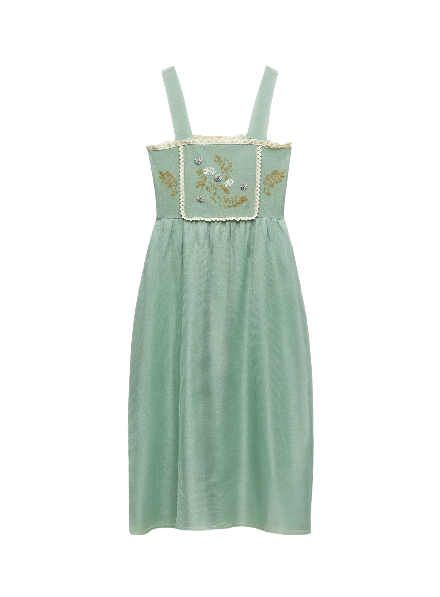

My Closet
My Closet
Here are some of my favorite clothing pieces that are a good representation of my personal style. I love clothing pieces that are like walking art and tend to gravitate towards streetwear, oversized fits, girly dresses, and jackets with unique designs.


